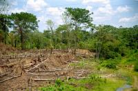
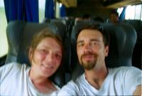
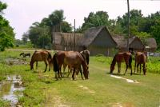

|
Vendredi 26 octobre
On se lève tôt et on se dépêche, notre bus part à 7H30. Direction la frontière
brésilienne. Vers 7H20, on avale un énorme petit déj -riz, oeuf, viande de porc-
à toute vitesse, dans un petit resto en face du terminal des bus. A 9H00, on
y est encore! Mais ça y est, le bus arrive. On charge nos sacs à l'intérieur
même du bus, on se disant que c'est bon signe, qu'il ne sera pas trop plein.
Et puis, à peine montés, le bus démarre et s'en va pressé de rattraper son retard...
et s'arrête 200 mètres plus loin pour changer de roue. Si d'habitude il faut
une trentaine de minutes pour démonter, réparer et remonter, ici, il fait chaud,
c'est peut-être ça: l'opération dure déjà depuis plus de 2 heures. Un type du
bus nous informe "vamos ahora", on part tout de suite. Quelques minutes plus
tard, on le voit en pleine sieste à l'ombre d'un mur!!! On devait arriver à
23h00, c'est sûr, on va être en retard. On dit que l'histoire se répète toujours,
pourvu qu'il ne nous abandonne pas à deux km de Guaranamerin en pleine nuit
et sous la pluie. A 11H40, on part.
A 14H30, déjeuner et, à 18H00, dîner dans un petit village sans électricité
et où l'eau courante est remplacée par celle puisée dans le puits. C'est qu'après,
il n'y a plus rien. Certains en profitent pour faire leur commerce, comme cette
dame qui ramène pour sa boutique des dizaines et des dizaines de packs de soda.
Elle en vend 4 au passage, c'est toujours ça de pris. Personne ne veut de tomates,
dommage, il y en a des cageots pleins dans les soutes. Sur la route, on a eu
le plaisir d'admirer le vol d'une dizaine de peroquets géants bleus sur le dessus,
jaunes sur le dessous. Il y a eu aussi des oiseaux de la taille d'une hirondelle
avce une queue qui a l'air trop logue pour eux et fort encombrante. Au moins
trois fois la taille de l'oiseau! Ils chassent des insectes et pour cela utilisent
leur queue comme gouvernail pour virevolter, on dirait des paires de ciseaux
géants!
La piste, non goudronnée, est assez bonne. Bien meilleure que celle du début,
celle qui menait à Santa Rosa qu'on avait déjà faite aller et retour pour notre
balade dans la pampa du côté de Rurre. Par contre, les grosses vibrations du
bus font rebondir la tête sur le dossier, alors, forcément, c'est moins facile
pour dormir. A 3H00 du mat, on s'arrête à Riberalta, à deux heures dce notre
destination. Le chauffeur est fatigué, nous aussi, on dort.
Samedi 27 octobre
A 6H00, réveil. Petit dej au marché au comedor popular. Empanadas au fromage
et un thé. Et c'est reparti. Il est 7H30. Il faut dire qu'il a fallu décharger
plein de trucs et transvaser les caisses de tomates du coffre arrière au coffre
du côté, soit une grosse demi heure rien que pour les tomates. Trente mètres,
tout va bien, on ne s'est pas encore arrêté. 50 mètres, premier arrêt pour...
décharger la moitié des tomates... ou comment travailler pour passer le temps!
Arrivée prévue dans 2 heures. Dix minutes plus tard, on est arrêté de nouveau.
Comme d'habitude, on ignore pourquoi. Les gens commencent à rouspéter "vamos!
prends tes tomates et laisse-nous partir". Le chauffeur qui sent que la tension
monte, essaie de calmer les esprits. Il fait ronfler le moteur. "Vamos!" dit
le bus... on avance de 2 mètres... "vamos!"... on y croit, il s'arrête... "vamos!"...
il met la musique... "vamos!"... il recule de 2 mètres... "vamos!"... le moteur
ronfle mais on n'avance pas, il a "oublié" d'enclencher une vitesse... "vamos!"...
On repart 20 minutes plus tard pour arriver à 10H00 à Guaranamerin. Ca fait
23 heures qu'on est parti. Ca fait 11 heures qu'on était sensé arriver. Mais
ça n'est pas bien grave. On était à peine une quinzaine dans le bus, bonne ambiance,
chaleur, soleil couchant, tout le monde qui se marre, musique bolivienne tendance
samba brésilienne. La traversée de l'Amazonie en bus... comme dans un film.
Suite du voyage : Le Brésil
|

Bolivie
Rurrenabaque - Guaranamerin
|

Bolivie
Rurrenabaque - Guaranamerin
|

Bolivie
Rurrenabaque - Guaranamerin
|
|
|